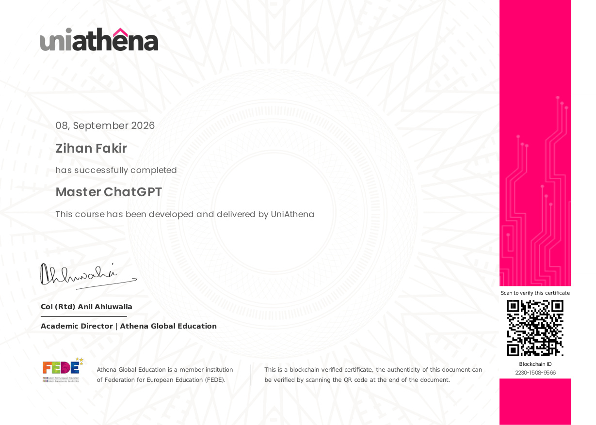
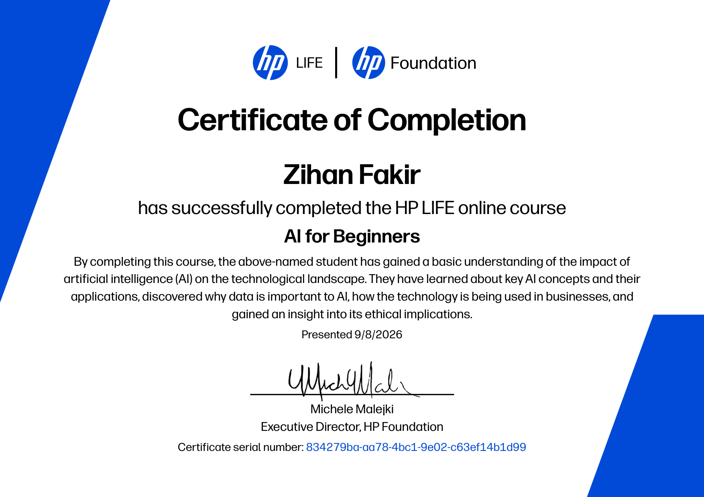
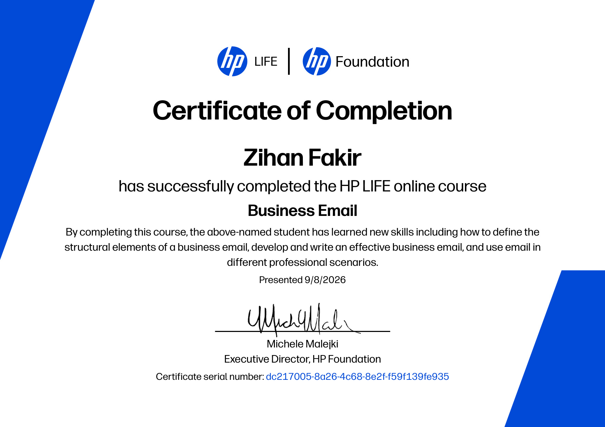
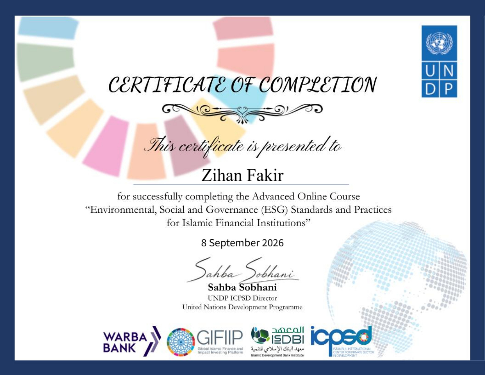
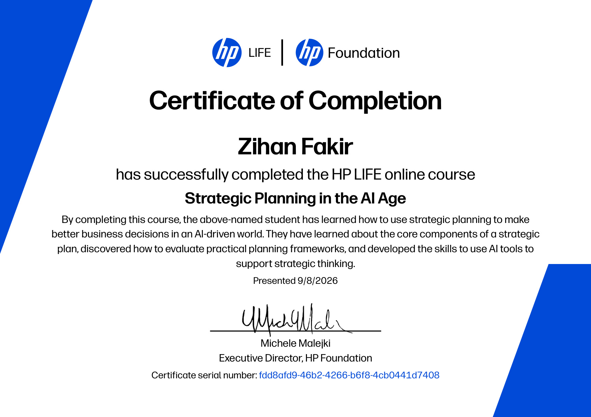
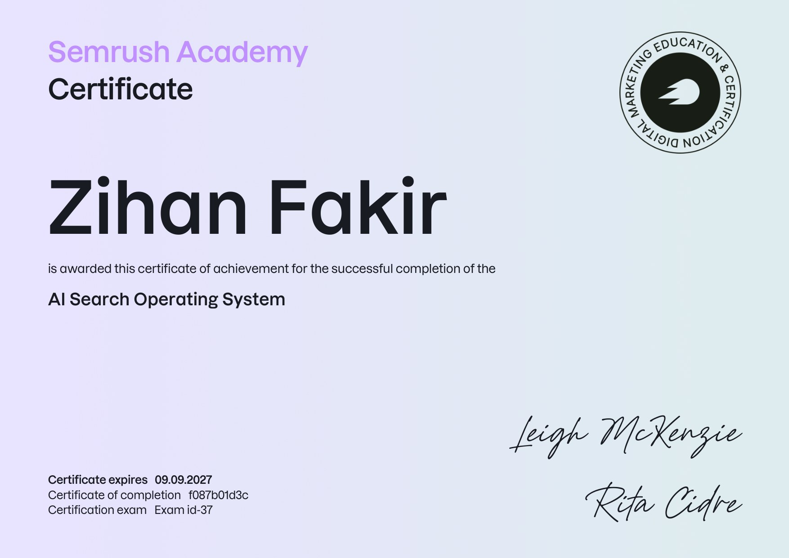
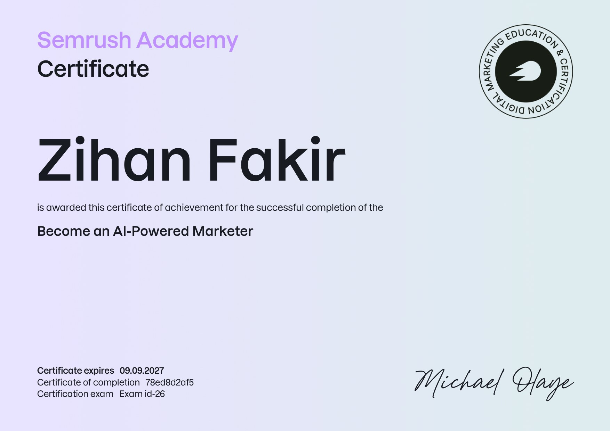
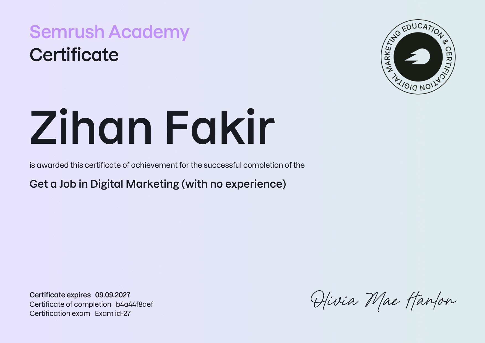

Official Certifications
A showcase of 12 verified technical credentials, artificial intelligence specializations, and professional qualifications earned from industry-leading institutions worldwide.

Create Image Captioning Models
Computer vision, multimodal neural networks, encoder-decoder architectures, and deep learning models for automatic image captioning.

Business Analytics with Excel
Advanced data analytics, business modeling, regression analysis, pivot table reporting, and data-driven decision intelligence.

Automating with AI/ML on AWS
Official AWS curriculum covering automated machine learning pipelines, cloud AI workflow integration, and operational efficiency.

Master ChatGPT & Generative AI
Blockchain-verified certification in generative AI models, advanced prompt engineering, autonomous agents, and LLM orchestration.

AI for Beginners
Executive accreditation in AI fundamentals, machine learning taxonomy, practical enterprise applications, and ethical AI deployment.

Business Email Communication
Executive correspondence, client communication etiquette, persuasive professional copywriting, and cross-cultural correspondence.
Critical Thinking in the AI Era
Analytical reasoning, detecting algorithmic bias, systematic hallucination mitigation, and evaluating AI outputs with rigorous logic.

ESG Standards & Practices
Executive accreditation in Environmental, Social, and Governance (ESG) standards, impact measurement, and ethical institutional sustainability.

Strategic Planning in the AI Age
Formulating technology roadmaps, competitive intelligence analysis, strategic agile execution, and leveraging modern AI workflows.

AI Search Operating System
Mastery of AI-powered search engines, generative engine optimization (GEO), RAG search pipelines, and semantic query parsing.

Become an AI-Powered Marketer
Integration of generative AI tools, automated marketing workflows, conversion analytics, and programmatic audience reach.

Get a Job in Digital Marketing
Search engine optimization (SEO), technical website audit methodologies, keyword discovery, and data-backed marketing funnels.